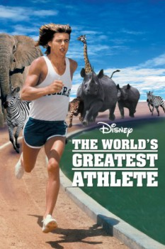

Country:United States, 106 minutes
Spoken languages:English, Italian
Genres:Comedy, Family
Director(s):Robert Scheerer
Writer(s):Gerald Gardner, Dee Caruso
Video Codec:Unknown
Number: 1614

Certification:G
Storyline:
Stuck with a feeble sports department, college coach Sam Archer (John Amos) faces the ax unless he can reverse the school's athletic fortunes. An African vacation with his assistant (Tim Conway) answers Archer's prayers when he spots the athletically gifted Nanu (Jan-Michael Vincent). Sam counts on Nanu's remarkable abilities to put the team back on the winning track. This upbeat farce boasts an impressive cast of comedians.
Cast:
Jan-Michael Vincent (as Nanu), Tim Conway (as Milo Jackson), John Amos (as Coach Sam Archer), Roscoe Lee Browne (as Gazenga), Dayle Haddon (as Jane)
Medium: Media file,
Location: D:\Disney\WORLDS_GREATEST_ATHLETE.mp4
Loaned: No
Aspect ratio: Unknown